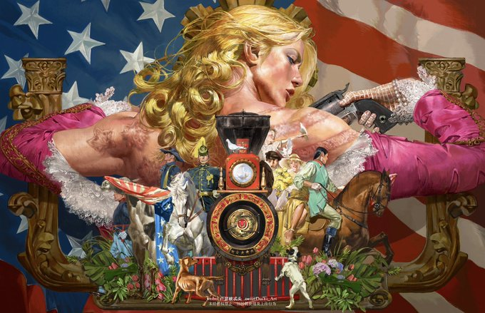

JOHNNY JOESTAR
Johnny Joestar adalah protagonis utama dari Steel Ball Run, bagian ketujuh dari serial JoJo's Bizarre Adventure karya Hirohiko Araki. Dia adalah seorang mantan joki kuda yang kehilangan kemampuan berjalan setelah insiden tragis, tetapi perjalanannya dalam balapan Steel Ball Run membawanya pada petualangan yang mengubah hidupnya.
Latar Belakang Johnny Joestar
Johnny lahir dengan nama asli Jonathan Joestar di sebuah keluarga kaya di Amerika Serikat pada abad ke-19. Ayahnya adalah seorang dokter hewan terkenal yang sangat keras dan lebih memperhatikan kakaknya, Nicholas. Johnny sangat mengidolakan Nicholas, tetapi setelah kecelakaan yang menyebabkan kematian kakaknya, hubungan Johnny dengan keluarganya menjadi semakin buruk.
Sebagai joki berbakat, Johnny awalnya memiliki hidup yang menjanjikan. Namun, karena kesombongannya, dia terlibat dalam perkelahian dengan seorang pria yang akhirnya menembaknya di tulang belakang. Insiden ini membuatnya lumpuh dari pinggang ke bawah, menghancurkan karier dan hidupnya. Setelah itu, Johnny menjadi pria yang depresi dan putus asa.
Petualangan di Steel Ball Run
Segalanya berubah ketika Johnny bertemu dengan Gyro Zeppeli, seorang pria misterius dari Italia yang menggunakan teknik bernama Spin dengan bola baja (Steel Ball). Saat Johnny menyentuh salah satu bola baja milik Gyro, dia merasakan sensasi aneh yang membuatnya bisa menggerakkan jari-jarinya yang lumpuh. Hal ini membangkitkan harapannya untuk sembuh, dan dia memutuskan untuk mengikuti balapan Steel Ball Run, sebuah perlombaan kuda lintas benua dari San Diego ke New York dengan hadiah besar.
Sepanjang balapan, Johnny bertarung melawan berbagai musuh, termasuk pembunuh, penunggang kuda tangguh, dan bahkan Presiden Amerika Serikat, Funny Valentine, yang menginginkan peninggalan suci Holy Corpse Parts yang tersebar di seluruh Amerika. Seiring perjalanan, Johnny mulai menguasai kekuatan Spin, yang akhirnya membangkitkan Stand miliknya, Tusk.

Infinite Rotation
Tusk ACT4 embodies the infinite energy and rotation of the Golden Spin and is able to deploy it in various ways.
Following the principle of the Golden Spin, the energy wielded and embodied by Tusk ACT4 is infinite, allowing a wide array of otherwise impossible feats. One of the first abilities displayed by Tusk ACT4 is to be able to break through the dimensional barrier of Love Train and enter the space in which Valentine hides